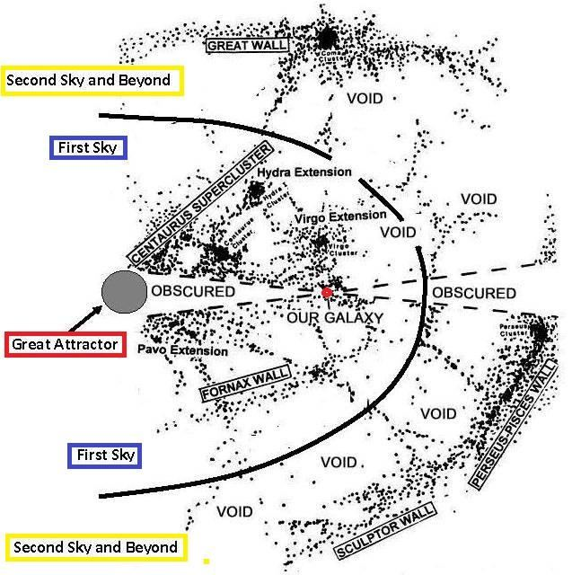
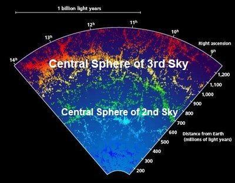
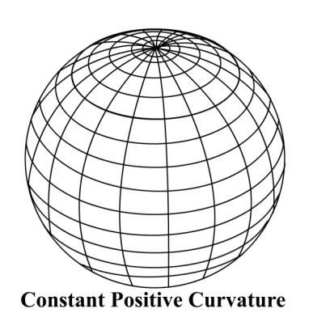
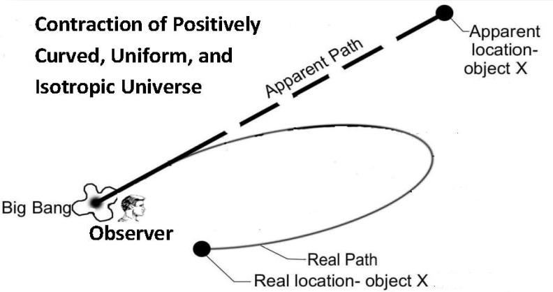

FIGURE 30.7: Likely First and Second Sky Figure 30.7 is based on NASA data. To highlight the structure of the universe, I have marked the probable boundary of the First Sky and the Second Sky. The Great Attractor is placed at the center.

চিত্র 30_7 / Figure 30_7
চিত্র 30.7: সম্ভবত প্রথম এবং দ্বিতীয় আকাশ চিত্র 30.7 NASA ডেটার উপর ভিত্তি করে। মহাবিশ্বের গঠন তুলে ধরার জন্য, আমি প্রথম আকাশ এবং দ্বিতীয় আকাশের সম্ভাব্য সীমানা চিহ্নিত করেছি। মহান আকর্ষক কেন্দ্রে স্থাপন করা হয়.
চিত্র 30_7 / Figure 30_7
2e-I. The First (Innermost) Sky
2e-I. প্রথম (অন্তঃস্থ) আকাশ
In Figure 30.7, the Centaurus Supercluster, along with its extensions—such as the Hydra Extension, Virgo Extension, Pavo Extension, Norma Supercluster, and the Fornax Wall—forms the First (Innermost) Sky, with the Great Attractor at the center. The gravity of the Great Attractor is so powerful that all objects within the First Sky are being drawn toward it. This gravitational effect can be explained as the tendency of matter to move along curved space-time. Thus, from the edge of the First Sky, space slopes inward toward the center, where the Great Attractor is located. In other words, the fabric of space is denser at the center of the First Sky, and as one moves toward the edge, the fabric of space becomes thinner. The Great Attractor does not require a mass of 10¹⁶ suns to produce a gravitational force strong enough to pull objects from 250 million light-years away; the galaxies move in that direction due to the very design of space. All matter up to a distance of about 250 million light- years is flowing toward the Great Attractor at a speed of approximately 600 km/s. Therefore, the radius of the First Sky should be about 300 million light-years, accounting for half the width of the belt of void (250 + 50). 2e-II. The Second Sky
চিত্র 30.7-এ, সেন্টোরাস সুপারক্লাস্টার, এর এক্সটেনশনগুলির সাথে-যেমন হাইড্রা এক্সটেনশন, ভিরগো এক্সটেনশন, পাভো এক্সটেনশন, নরমা সুপারক্লাস্টার এবং ফরনাক্স ওয়াল-প্রথম (অভ্যন্তরীণ) আকাশ গঠন করে, যার কেন্দ্রে রয়েছে দুর্দান্ত আকর্ষণ। গ্রেট অ্যাট্রাক্টরের মাধ্যাকর্ষণ এতটাই শক্তিশালী যে প্রথম আকাশের সমস্ত বস্তু তার দিকে টানা হচ্ছে। এই মহাকর্ষীয় প্রভাবকে বস্তুর বক্র স্থান-কাল বরাবর চলার প্রবণতা হিসাবে ব্যাখ্যা করা যেতে পারে। এইভাবে, প্রথম আকাশের প্রান্ত থেকে, মহাকাশ ঢাল কেন্দ্রের দিকে ভিতরের দিকে, যেখানে গ্রেট অ্যাট্রাক্টর অবস্থিত। অন্য কথায়, ফার্স্ট স্কাইয়ের কেন্দ্রে স্থানের ফ্যাব্রিক ঘন হয় এবং প্রান্তের দিকে এগিয়ে যাওয়ার সাথে সাথে স্থানের কাপড় পাতলা হয়ে যায়। 250 মিলিয়ন আলোকবর্ষ দূরে থেকে বস্তুকে টেনে আনতে যথেষ্ট শক্তিশালী মহাকর্ষীয় বল তৈরি করতে গ্রেট অ্যাট্রাক্টরের 10¹⁶ সূর্যের ভরের প্রয়োজন হয় না; মহাকাশের নকশার কারণে ছায়াপথগুলো সেই দিকে চলে। প্রায় 250 মিলিয়ন আলোকবর্ষ দূরত্ব পর্যন্ত সমস্ত পদার্থ প্রায় 600 কিমি/সেকেন্ড গতিতে গ্রেট অ্যাট্রাক্টরের দিকে প্রবাহিত হচ্ছে। অতএব, প্রথম আকাশের ব্যাসার্ধ প্রায় 300 মিলিয়ন আলোকবর্ষ হওয়া উচিত, যা অকার্যকর বেল্টের অর্ধেক প্রস্থ (250 + 50)। 2e-II. দ্বিতীয় আকাশ
In Figure 30.7, the Great Wall, Perseus-Pisces Wall, and Sculptor Wall, along with other co-located structures, form the Second Sky. The galaxies within the Second Sky are primarily concentrated along the central sphere, creating the walls. The fabric of space is denser in the central sphere of the Second Sky, and as it moves toward the edges, the fabric becomes thinner. Thus, from the edges, space slopes inward toward the central sphere, where the galaxies slide down and form walls. The formation of walls suggests that space is curved in the form of spherical waves. The Second Sky appears to be 400 million light-years wide, accounting for half the width of the void belts on each side (50 + 300 + 50). The central plane of the Second Sky is approximately 500 million light-years away from the Great Attractor (Radius of the First Sky + 1/2 the width of the Second Sky = 500 MLY).
চিত্র 30.7-এ, গ্রেট ওয়াল, পার্সিয়াস-মীন প্রাচীর এবং ভাস্কর প্রাচীর সহ অন্যান্য সহ-অবস্থিত কাঠামো, দ্বিতীয় আকাশ গঠন করে। দ্বিতীয় আকাশের গ্যালাক্সিগুলি প্রাথমিকভাবে কেন্দ্রীয় গোলক বরাবর কেন্দ্রীভূত, দেয়াল তৈরি করে। দ্বিতীয় আকাশের কেন্দ্রীয় গোলকটিতে স্থানের কাপড়টি ঘন হয় এবং এটি প্রান্তের দিকে অগ্রসর হওয়ার সাথে সাথে ফ্যাব্রিকটি পাতলা হয়ে যায়। এইভাবে, প্রান্ত থেকে, মহাকাশ ঢালু মধ্য গোলকের দিকে ভিতরের দিকে চলে যায়, যেখানে ছায়াপথগুলি নিচের দিকে স্লাইড করে এবং দেয়াল তৈরি করে। দেয়ালের গঠন থেকে বোঝা যায় যে স্থানটি গোলাকার তরঙ্গের আকারে বাঁকা। দ্বিতীয় আকাশ 400 মিলিয়ন আলোকবর্ষ প্রশস্ত বলে মনে হয়, প্রতিটি পাশের শূন্য বেল্টের অর্ধেক প্রস্থ (50 + 300 + 50)। দ্বিতীয় আকাশের কেন্দ্রীয় সমতল গ্রেট অ্যাট্রাক্টর থেকে প্রায় 500 মিলিয়ন আলোকবর্ষ দূরে (প্রথম আকাশের ব্যাসার্ধ + 1/2 দ্বিতীয় আকাশের প্রস্থ = 500 MLY)।
2e-III. The Third Sky
2e-III। তৃতীয় আকাশ
In the following figure, the Third Sky appears to be 600 million light-years wide, with its central sphere located approximately 1,000 million light-years away from the Great Attractor (300 + 400 + 300). FIGURE 30.8: Likely 2nd and 3rd Sky

চিত্র 30_8 / Figure 30_8
নিম্নলিখিত চিত্রে, তৃতীয় আকাশটি 600 মিলিয়ন আলোকবর্ষ প্রশস্ত বলে মনে হচ্ছে, এর কেন্দ্রীয় গোলকটি গ্রেট অ্যাট্রাক্টর (300 + 400 + 300) থেকে প্রায় 1,000 মিলিয়ন আলোকবর্ষ দূরে অবস্থিত। চিত্র 30.8: সম্ভবত 2য় এবং 3য় আকাশ
চিত্র 30_8 / Figure 30_8
Thus, an Outer Sky is wider than the Inner Sky. In this scale, the radius of the universe may range from 5 to 7 billion light-years at best. The universe appears much larger due to the curved space (Skies) and the continuous contraction of matter (galaxies) toward the central spheres of the waves (Skies). This effect is further amplified by the Roll-up-Closing of the universe, which is discussed later.
সুতরাং, একটি বাইরের আকাশ ভিতরের আকাশের চেয়ে প্রশস্ত। এই স্কেলে, মহাবিশ্বের ব্যাসার্ধ সর্বোত্তমভাবে 5 থেকে 7 বিলিয়ন আলোকবর্ষের মধ্যে হতে পারে। বক্র স্থান (আকাশ) এবং তরঙ্গের কেন্দ্রীয় গোলকের (আকাশ) দিকে পদার্থের ক্রমাগত সংকোচনের (গ্যালাক্সি) কারণে মহাবিশ্ব অনেক বড় দেখায়। এই প্রভাবটি মহাবিশ্বের রোল-আপ-ক্লোজিং দ্বারা আরও প্রসারিত হয়েছে, যা পরে আলোচনা করা হয়েছে।
2e-IV. The Universe with Seven Skies
2e-IV. সাত আকাশ সহ মহাবিশ্ব
In Figure 30.9, the Skies are represented as two- dimensional waves. The Outer Skies (Third to Seventh) should resemble the Second Sky. FIGURE 30.9: Skies in two-dimensional Waves

চিত্র 30_9 / Figure 30_9
চিত্র 30.9-এ, আকাশকে দ্বি-মাত্রিক তরঙ্গ হিসাবে উপস্থাপন করা হয়েছে। বাইরের আকাশ (তৃতীয় থেকে সপ্তম) দ্বিতীয় আকাশের মতো হওয়া উচিত। চিত্র 30.9: দ্বি-মাত্রিক তরঙ্গে আকাশ
চিত্র 30_9 / Figure 30_9
3. The Collapse and Re-creation of the Universe
3. মহাবিশ্বের পতন এবং পুনঃসৃষ্টি
The universe will collapse by rolling up the Skies. After the Final Judgment, the universe will be recreated, just as the first creation was originated.
আকাশকে গুটিয়ে নিয়ে মহাবিশ্ব ভেঙে পড়বে। চূড়ান্ত বিচারের পরে, মহাবিশ্ব পুনরায় তৈরি করা হবে, যেমন প্রথম সৃষ্টির উদ্ভব হয়েছিল।
―On the Day when We will roll up the Skies (universe) like the rolling up of the scroll for writings; as We originated the first creation We shall reproduce it—a promise on Us, surely We will bring it about.‖ [Al Quran 21: 104]
যেদিন আমরা আকাশকে (মহাবিশ্বকে) গুটিয়ে নেব লেখার জন্য স্ক্রল গুটিয়ে নেওয়ার মতো; যেভাবে আমরা প্রথম সৃষ্টির উদ্ভব করেছি, আমরা এটিকে পুনরুত্পাদন করব-আমাদের প্রতি একটি প্রতিশ্রুতি, অবশ্যই আমরা এটি তৈরি করব।'' [আল কুরআন 21:104]
At the time of the Final Judgment, the universe will be in the right hand of Allah, in a rolled-up state.
চূড়ান্ত বিচারের সময়, মহাবিশ্ব থাকবে আল্লাহর ডান হাতে, গুটানো অবস্থায়।
―And not they honored Allah—true honor—while the Land (Land of Judgment) is assembling in His hand on the Day of Resurrection, and the Skies (Samawaat / Universe) rolled-up in His right hand. Glory be to Him! And high is He above what they associate (with Him).‖ [Al Quran 39: 67]
- এবং তারা আল্লাহকে সম্মান করেনি - সত্যিকারের সম্মান - যখন ভূমি (বিচারের ভূমি) কেয়ামতের দিন তাঁর হাতে সমবেত হবে এবং আকাশ (সামাওয়াত / মহাবিশ্ব) তাঁর ডান হাতে গড়িয়ে পড়বে। তিনি পবিত্র! এবং তারা যাকে শরীক করে তিনি তার উর্ধ্বে।'' [আল কুরআন 39:67]
4. The Roll-up-Closing of the Seven-Sky-Universe
4. সাত-আকাশ-মহাবিশ্বের রোল-আপ-ক্লোজিং
Scientists observe that the universe is expanding and appears flat. In a flat universe, expansion would continue indefinitely, or contraction would occur only in the distant future. However, in light of the Quran, the universe is already closing, with the Skies rolling up from its outer boundary (the Seventh Sky).
বিজ্ঞানীরা পর্যবেক্ষণ করেন যে মহাবিশ্ব প্রসারিত হচ্ছে এবং সমতল দেখা যাচ্ছে। একটি সমতল মহাবিশ্বে, সম্প্রসারণ অনির্দিষ্টকালের জন্য অব্যাহত থাকবে, অথবা সংকোচন ঘটবে কেবল দূরবর্তী ভবিষ্যতে। যাইহোক, কুরআনের আলোকে, মহাবিশ্ব ইতিমধ্যেই বন্ধ হয়ে যাচ্ছে, আকাশ তার বাইরের সীমানা (সপ্তম আকাশ) থেকে গড়িয়েছে।
―See they not that We gradually come to the land (land of Judgment) by reducing it (the universe) from its outlying border (Seventh Sky)? Allah judges; there is no adjuster of His judgment, and He is swift in calling to account.‖ [Al Quran 13: 41]
-তারা কি দেখে না যে, আমরা ধীরে ধীরে (বিচারের দেশে) আসি তার বহির্গত সীমানা (সপ্তম আকাশ) থেকে কমিয়ে দিয়ে? আল্লাহ বিচার করেন; তাঁর বিচারের কোনো সমন্বয়কারী নেই এবং তিনি দ্রুত হিসাব গ্রহণ করেন।'' [আল কুরআন 13:41]
In the following, I present my arguments that the universe is closing. However, we observe it expanding because it is contracting by rolling up from the outermost Sky. This process is explained gradually. The following are a few key realities that form the basis of my explanation. To a cosmologist, the universe is uniform, isotropic, and flat. However, to us, the universe is structured into Seven Skies. In this respect, we should not place too much importance on the Map of CMBR, as a larva does not appear to be a creature that will eventually become a butterfly (see Section 10 of Chapter 21). Cosmologists observe that the recession velocities of the most distant objects are increasing over time. These objects belong to the outer Skies in our view. Cosmologists estimate that the accelerated expansion of the universe began roughly 5 billion years ago. For ease of understanding the roll-up of the seven-sky universe, let us first discuss how the contraction of a 'uniform, isotropic, positively curved universe' would appear?
নীচে, আমি আমার যুক্তি উপস্থাপন করছি যে মহাবিশ্ব বন্ধ হচ্ছে। যাইহোক, আমরা এটিকে প্রসারিত হতে দেখেছি কারণ এটি সবচেয়ে বাইরের আকাশ থেকে গড়িয়ে সংকুচিত হচ্ছে। এই প্রক্রিয়াটি ধীরে ধীরে ব্যাখ্যা করা হয়। নিম্নলিখিত কয়েকটি মূল বাস্তবতা যা আমার ব্যাখ্যার ভিত্তি তৈরি করে। একজন কসমোলজিস্টের কাছে মহাবিশ্ব অভিন্ন, সমস্থানীয় এবং সমতল। যাইহোক, আমাদের কাছে, মহাবিশ্ব সাত আকাশে গঠিত। এই ক্ষেত্রে, আমাদের CMBR-এর মানচিত্রে খুব বেশি গুরুত্ব দেওয়া উচিত নয়, কারণ লার্ভা এমন একটি প্রাণী বলে মনে হয় না যা শেষ পর্যন্ত একটি প্রজাপতিতে পরিণত হবে (অধ্যায় 21-এর 10 বিভাগ দেখুন)। কসমোলজিস্টরা দেখেন যে সবচেয়ে দূরবর্তী বস্তুর মন্দা বেগ সময়ের সাথে সাথে বাড়ছে। এই বস্তুগুলি আমাদের দৃষ্টিতে বাইরের আকাশের অন্তর্গত। কসমোলজিস্টরা অনুমান করেন যে প্রায় 5 বিলিয়ন বছর আগে মহাবিশ্বের ত্বরিত প্রসারণ শুরু হয়েছিল। সাত-আকাশের মহাবিশ্বের রোল-আপ বোঝার সুবিধার জন্য, আসুন প্রথমে আলোচনা করা যাক কীভাবে একটি 'অভিন্ন, আইসোট্রপিক, ইতিবাচকভাবে বাঁকা মহাবিশ্বের সংকোচন দেখাবে?
FIGURE 30.10: A ‗uniform isotopic positively curved universe‘

চিত্র 30_10 / Figure 30_10
চিত্র 30.10: একটি 'অভিন্ন আইসোটোপিক ইতিবাচকভাবে বাঁকা মহাবিশ্ব'
চিত্র 30_10 / Figure 30_10
We know that in a 'uniform, isotropic, positively curved universe,' space is bent onto itself; light traveling in what seems like a straight line will eventually return to its point of origin. Therefore, in such a universe, objects would appear to be moving away, even if they were actually returning.
আমরা জানি যে 'একটি ইউনিফর্ম, আইসোট্রপিক, ইতিবাচকভাবে বাঁকা মহাবিশ্বে' স্থানটি নিজের দিকে বাঁকানো হয়; একটি সরল রেখার মত মনে হয় আলো ভ্রমণ অবশেষে তার মূল বিন্দু ফিরে আসবে. অতএব, এই ধরনের মহাবিশ্বে, বস্তুগুলি সরে যাচ্ছে বলে মনে হবে, এমনকি যদি তারা বাস্তবে ফিরে আসে।
FIGURE 30.11: Object X in a ‗uniform isotopic positively curved universe‘

চিত্র 30_11 / Figure 30_11
চিত্র 30.11: একটি 'অভিন্ন আইসোটোপিক ইতিবাচকভাবে বাঁকা মহাবিশ্বে অবজেক্ট X'
চিত্র 30_11 / Figure 30_11
In Figure 30.11, the observer is located at the central region of a 'uniform, isotropic, positively curved universe.' The observer sees the distant object 'X' in its apparent location and perceives it as receding, even though the object is actually approaching. This occurs because the light is traveling along a curved path, and the curvature of space is not visible to the observer. In a 'uniform, isotropic, positively curved universe,' the speed of an object is expected to increase during the contracting phase, just as it decreased during the expanding phase. Therefore, in such a universe, an increase in speed would indicate that the universe is contracting. However, in this case, a large number of distant objects would appear to be approaching, as the light emitted during the approaching phase would reach the Earth. This means that in the diagram above (30.11), object X would also be seen in its actual location, approaching the observer. Currently, scientists observe the recession rate of distant objects accelerating, but they do not observe a reasonable number of objects approaching them. In a supposedly 'uniform, isotropic, positively curved universe,' this indicates that the universe is not contracting; rather, the objects are truly receding at an accelerating rate. But what if the universe is waved into Seven Skies and is closing by rolling up the Skies? To understand the rolling Skies, we need to discuss how a spinning universe would appear:
চিত্র 30.11-এ, পর্যবেক্ষক একটি 'অভিন্ন, আইসোট্রপিক, ইতিবাচকভাবে বাঁকা মহাবিশ্বের কেন্দ্রীয় অঞ্চলে অবস্থিত।' পর্যবেক্ষক দূরবর্তী বস্তু 'X'টিকে তার আপাত অবস্থানে দেখেন এবং বস্তুটি আসলে কাছে এসে গেলেও এটিকে পিছিয়ে যাওয়া হিসাবে উপলব্ধি করেন। এটি ঘটে কারণ আলো একটি বাঁকা পথ ধরে ভ্রমণ করছে এবং স্থানের বক্রতা পর্যবেক্ষকের কাছে দৃশ্যমান নয়। একটি 'অভিন্ন, আইসোট্রপিক, ইতিবাচকভাবে বাঁকা মহাবিশ্বে', একটি বস্তুর গতি সংকোচন পর্যায়ে বাড়বে বলে আশা করা হয়, ঠিক যেমনটি সম্প্রসারণ পর্যায়ে হ্রাস পায়। অতএব, এই ধরনের মহাবিশ্বে, গতি বৃদ্ধি ইঙ্গিত করবে যে মহাবিশ্ব সংকুচিত হচ্ছে। যাইহোক, এই ক্ষেত্রে, বহু সংখ্যক দূরবর্তী বস্তু কাছে আসছে বলে মনে হবে, কারণ কাছে আসার পর্যায়ে নির্গত আলো পৃথিবীতে পৌঁছাবে। এর মানে হল যে উপরের চিত্রে (30.11), অবজেক্ট Xও তার প্রকৃত অবস্থানে দেখা যাবে, পর্যবেক্ষকের কাছে গিয়ে। বর্তমানে, বিজ্ঞানীরা দূরবর্তী বস্তুর ত্বরান্বিত মন্দার হার পর্যবেক্ষণ করেন, কিন্তু তারা তাদের কাছে আসা বস্তুর একটি যুক্তিসঙ্গত সংখ্যক পর্যবেক্ষণ করেন না। একটি অনুমিতভাবে 'অভিন্ন, আইসোট্রপিক, ইতিবাচকভাবে বাঁকা মহাবিশ্বে', এটি নির্দেশ করে যে মহাবিশ্ব সংকোচন করছে না; বরং, বস্তুগুলি সত্যিই একটি ত্বরিত হারে হ্রাস পাচ্ছে। কিন্তু যদি মহাবিশ্ব সাত আকাশে তরঙ্গায়িত হয় এবং আকাশ গড়িয়ে বন্ধ হয়ে যায়? ঘূর্ণায়মান আকাশ বোঝার জন্য, আমাদের আলোচনা করতে হবে কিভাবে একটি ঘূর্ণায়মান মহাবিশ্ব আবির্ভূত হবে:
4a. Spinning Universe
4ক. স্পিনিং ইউনিভার্স
A rolling universe with Skies should have an Axis. Some scientists argue that the Big Bang was spinning. As the universe expanded, the net angular momentum has dissipated among the galaxies. If the Big Bang was spinning, the universe would have an axis and might still be rotating relative to other universes in higher-dimensional space. ―For the past few years, Professor Longo has worked primarily in astrophysics, in particular, analyzing data from the Sloan Digital Sky Survey (SDSS). This has led to strong evidence for a cosmic parity violation in the Universe, as indicated by a statistically significant excess of left-handed spiral galaxies toward the North Galactic Pole and an excess of right-handed in the opposite direction. This also suggests that our Universe has a preferred axis and a net angular momentum. Since angular momentum is conserved this means the Universe must have been born spinning. We can't see outside of our Universe, so we'd have to assume it is spinning relative to other universes in a higher dimensional space. Presumably the Big Bang was spinning initially, and as it expanded, the net angular momentum was dissipated among the galaxies. Now we still see it through the preferred spin direction.‖ - ―Detection of a Dipole in the Handedness of Spiral Galaxies with Redshifts z~0.04, Michael J. Longo, Phys. Lett. B 699, 224-229 (2011).
আকাশ সহ একটি ঘূর্ণায়মান মহাবিশ্বের একটি অক্ষ থাকা উচিত। কিছু বিজ্ঞানী যুক্তি দেন যে বিগ ব্যাং ঘুরছিল। মহাবিশ্ব প্রসারিত হওয়ার সাথে সাথে নেট কৌণিক ভরবেগ ছায়াপথগুলির মধ্যে ছড়িয়ে পড়েছে। যদি বিগ ব্যাং ঘূর্ণায়মান হয়, মহাবিশ্বের একটি অক্ষ থাকবে এবং উচ্চ-মাত্রিক মহাকাশে অন্যান্য মহাবিশ্বের তুলনায় এটি এখনও ঘূর্ণায়মান হতে পারে। - গত কয়েক বছর ধরে, প্রফেসর লংগো প্রাথমিকভাবে জ্যোতির্পদার্থবিদ্যায় কাজ করেছেন, বিশেষ করে, স্লোন ডিজিটাল স্কাই সার্ভে (SDSS) থেকে ডেটা বিশ্লেষণ করে৷ এটি মহাবিশ্বে মহাজাগতিক সমতা লঙ্ঘনের জন্য শক্তিশালী প্রমাণের দিকে পরিচালিত করেছে, যেমনটি উত্তর গ্যালাকটিক মেরুতে বাম-হাতের সর্পিল ছায়াপথগুলির একটি পরিসংখ্যানগতভাবে উল্লেখযোগ্য আধিক্য এবং বিপরীত দিকে ডান হাতের আধিক্য দ্বারা নির্দেশিত হয়েছে। এটি আরও পরামর্শ দেয় যে আমাদের মহাবিশ্বের একটি পছন্দের অক্ষ এবং একটি নেট কৌণিক ভরবেগ রয়েছে। যেহেতু কৌণিক ভরবেগ সংরক্ষিত আছে এর মানে হল মহাবিশ্ব অবশ্যই ঘুরতে ঘুরতে জন্মগ্রহণ করেছে। আমরা আমাদের মহাবিশ্বের বাইরে দেখতে পারি না, তাই আমাদের ধরে নিতে হবে এটি একটি উচ্চমাত্রিক স্থানের অন্যান্য মহাবিশ্বের তুলনায় ঘূর্ণায়মান। সম্ভবত বিগ ব্যাং প্রাথমিকভাবে ঘুরছিল, এবং এটি প্রসারিত হওয়ার সাথে সাথে নেট কৌণিক ভরবেগ ছায়াপথগুলির মধ্যে ছড়িয়ে পড়েছিল। এখন আমরা এটিকে পছন্দের স্পিন দিক দিয়ে দেখতে পাই।'' - ''রেডশিফ্ট z~0.04, মাইকেল জে. লংগো, ফিজ সহ স্পাইরাল গ্যালাক্সির হাতে একটি ডাইপোল সনাক্তকরণ। লেট. বি 699, 224-229 (2011)।
It is impossible for us to comprehend the spin of the universe because we are living within it.
মহাবিশ্বের স্পিন বোঝা আমাদের পক্ষে অসম্ভব কারণ আমরা এর মধ্যে বাস করছি।